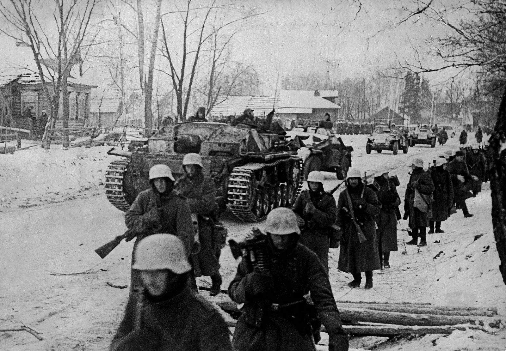

Битка за Москву почела је октобра 1941. као део операције Барбароса, немачке инвазије на Совјетски Савез. Хитлер је имао за циљ да заузме совјетску престоницу пре него што наступи зима, верујући да ће њен пад убрзати колапс совјетске државе. Немци су покренули операцију Тајфун, двосмерну офанзиву која је имала за циљ да опколи и заузме Москву.
У почетку су немачке снаге оствариле значајне успехе, користећи слабости совјетске одбране. Оклопни врхови копаља Вермахта брзо су напредовали, окружујући и уништавајући неколико совјетских армија. До краја октобра, немачке трупе су стигле до предграђа Москве, што је изазвало панику у граду. Совјетска влада се делимично евакуисала, а Стаљин је наредио очајничку одбрану.
Како су се немачке снаге приближавале, почетак руске зиме и логистички изазови почели су да ометају њихово напредовање. Совјети су под генералима Жуковом и Коњевом припремили утврђене одбрамбене линије око Москве. Сибирске дивизије, свеже и аклиматизоване за зимске борбе, стигле су да појачају совјетску одбрану.
Почетком децембра, када су температуре опадале и немачке снаге биле исцрпљене, Совјети су покренули контраофанзиву. Искоришћавајући њихову бројчану надмоћ и познавање сурових услова, Црвена армија је потиснула Немце из престонице. Кључне битке су се водиле око градова попут Туле и Калињина, где су совјетске снаге успеле да опколе и униште значајне немачке јединице.
До јануара 1942. совјетска контраофанзива је одбацила Немце на више од 240 километара од Москве. Немачко напредовање је заустављено, што је означило први велики пораз Вермахта на Источном фронту. Неуспех у заузимања Москве разбио је мит о немачкој непобедивости и означио значајну прекретницу у рату.
